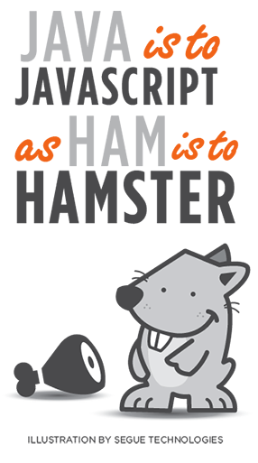

JavaScript: Introducció a JS¶
JavaScript: Què és i quina és la seva relació amb Java?¶
JavaScript és un llenguatge de programació de scripts que s'usa principalment a les pàgines web. No té res a veure amb el llenguatge de programació Java, tot i que els noms són similars.

| Aspecte | JavaScript | Java |
|---|---|---|
Ús principal |
Desenvolupament web i aplicacions de client. | Àmpliament utilitzat en aplicacions d'empresa, desenvolupament d'aplicacions Android i servidors. |
Execució |
S'executa en el navegador del client. | Requereix una màquina virtual Java (JVM). |
Tipus de programari |
Interpretat. | Compilat a bytecode i després interpretat. |
Portabilitat |
Altament portàtil entre diferents navegadors. | Portàtil a través de plataformes amb JVM. |
Sintaxi |
Sintaxi més simple i flexible. | Sintaxi més rigorosa i verbosa. |
Paradigma de programació |
Suporta la programació orientada a objectes. | Suporta múltiples paradigmes (OOP, procedimental, funcional). |
Llibreries i frameworks |
Abundància de llibreries i frameworks per al desenvolupament web. | Ampli ecosistema d'entorns i llibreries. |
JavaScript: Tecnologia Front-End o Back-End?¶

Front-End (Client-Side): En el front-end, JavaScript es fa servir per a la programació dels navegadors web. Aquesta funcionalitat s'ocupa de les interaccions d'un lloc web o aplicació web amb els usuaris en els seus navegadors. Amb JavaScript, pots crear dinàmicament elements HTML, gestionar esdeveniments com clics de ratolí i introduir animacions i efectes visuals. També pots fer sol·licituds AJAX per carregar dades sense necessitat de recarregar la pàgina web completa.
Back-End (Server-Side): En el back-end, JavaScript pot ser utilitzat amb tecnologies com Node.js per a la creació de servidors i aplicacions web del costat del servidor. Amb Node.js, pots escriure codi JavaScript que s'executa al servidor en lloc de només al navegador. Això obre la porta a la creació de tot tipus d'aplicacions web, com aplicacions de xat en temps real, servidors d'aplicacions web i serveis web.
Ús General: JavaScript és un llenguatge de programació versàtil i pot ser utilitzat per a moltes aplicacions diferents, no només les relacionades amb la web. Pot ser utilitzat per al desenvolupament d'aplicacions mòbils amb el marc de treball React Native, la creació d'aplicacions de l'escritori amb l'ajuda d'Electron i fins i tot per a la programació d'Internet de les Coses (IoT).
ECMAScript: L'Estàndard de JavaScript¶
ECMAScript (abreviat com a ES) es pot entendre com l'estàndard o especificació que defineix el llenguatge de programació JavaScript. En altres paraules, JavaScript és la implementació concreta d'ECMAScript. L'ECMAScript estableix les regles i característiques fonamentals que han de ser presents en qualsevol implementació de JavaScript. Aquestes característiques inclouen la sintaxi del llenguatge, els tipus de dades, les funcions...
L'estàndar ECMAScript 6 (o ECMAScript 2015), conegut també com a JavaScript 6, va ser una actualització significativa de JavaScript que va introduir moltes característiques noves i millores en el llenguatge. Algunes de les raons per les quals ECMAScript 6 va ser important inclouen:
-
Noves Característiques clau
-
Millora de la Llegibilitat
-
Compatibilitat entre Navegadors
-
Suport a les Últimes Novetats:
Incrustar JavaScript en un Document HTML¶
Podeu incrustar codi JavaScript en un document HTML de tres maneres diferents i compatibles entre sí:
És important tenir en compte que, per eficiència en la càrrega de la pàgina, es recomana posar tot el codi JavaScript al final del document HTML, just abans de la marca </body>. Això assegura que la major part de la pàgina es carregui abans de l'execució del JavaScript, millorant així la velocitat de càrrega de la pàgina web.